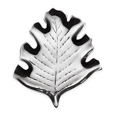

Användning av tenn
Tenn har – på grund av låg smältpunkt, god smidbarhet, relativt god korrosionsresistens, ringa giftighet, lågt pris och utmärkt förmåga att bilda legeringar med nästan alla andra metaller – sedan forntiden utnyttjas av människan för mycket varierande ändamål. Olegerat tenn används främst som
Historik
Sedan människan lärt sig hantera koppar kom insikten att tillförsel av andra metaller resulterade i bättre materialegenskaper. En blandning av koppar och tenn, s.k. tennbrons, visade sig hållbarare än andra legeringar
